ImageMagick Examples --
 Multi-Image Layers
Multi-Image Layers
- Index
 ImageMagick Examples Preface and Index
ImageMagick Examples Preface and Index
 Layers Introduction
Appending Images (-append)
Composition of Multiple Pairs of Images
Layers Introduction
Appending Images (-append)
Composition of Multiple Pairs of Images
- Using Composite Command (composite, -geometry)
- Composite Operator of Convert (-composite, -geometry)
- Draw Multiple Images (-draw 'image ..')
Layering Multiple Images
- Flatten - onto a Background Image
- Mosaics - Canvas Expanding
- Merging - to Create a New Layer Image
- Coalesce Composition - a Progressive Layering
- Compose Methods and Layering
- Layers Composite - Merge Two Image Lists
Layering Image Examples
- Layering Thumbnails
- Calculated Positioning of Images
- Two Stage Positioning of Images
- Pins in a Map
- Layers of Shadows
- Distorted Image Placement using Layers
Evaluate Sequence Multi-Image Merging
Poly - Merge Mutli-images Using a Polynomial
Layering Images Introduction
As we have previously noted, ImageMagick does not deal with just one image, but a sequence or list of images. This allows you to use IM in two very special image processing techniques. You can for example think of each image in the list as a single frame in time, so that the whole list can be regarded as being a Animation. This will be explored in other IM Example Pages. See Animation Basics. Alternatively, you can think of each image in the sequence as Layers of a set of see-through overhead transparencies. That is, each image represents a small part of the final image. For example: the first (lowest) layer can represent a background image. Above that you can have a fuzzy see though shadow. Then the next layer image contains the object that casts that shadow. On top of this a layer with some text that is written over that object. That is, you can have a sequence of images or 'layers' that each adds one more piece to a much more complex image. Each image layer can be moved, edited, or modified completely separately from any other layer, and even saved into a multi-image file (such as TIFF:, MIFF: or XCF:) or as separate images, for future processing. And that is the point of image layering. Only when all the image layers have been created do you Flatten, Mosaic, or Merge all the Layered Images into a single final image.Appending Images
Appending is probably the simplest, of the multi-image operations provided to handle multiple images. Basically it joins the current sequence of images in memory into a column, or a row, without gaps. The "-append" option appends vertically, while the plus form "+append" appends horizontally.
For example here we append a set of letter images together, side-by-side,
to form a fancy word, in a similar way that individual 'glyphs' or letters of
a 'font', are joined together.
magick font_A.gif font_P.gif font_P.gif font_E.gif font_N.gif \
font_D.gif font_E.gif font_D.gif +append append_row.gif
|
+append" operator was done as the last operation, after all the
images that you want to append have been added to the current image sequence.
This is great for appending a label to an image, for example...
| 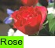 |
-background" color was used to fill in any space that was not
filled in. Of course if the all the images are the same width, no space will
be left for this fill.
From IM v6.4.7-1 the "-gravity" setting can be used to specify how the images should be
added together. As such in a vertical append, a setting of
'Center' will center the image relative to the final resulting
image (so will a setting of either 'North' or
'South').
|
![[IM Output]](append_center.jpg)
|
East' gravity setting will align the images on the
right side.
|
![[IM Output]](append_east.jpg)
|
+append"
Before IM v6.4.7 it was much more difficult to align appended images, and
generally involved using a "-flop" for right alignment. Or using "-extent" or "-border" to adjust the image
width for centered aligned appends.
For example, this will work with an older 6.3.2 version of IM...
|
|
![[IM Output]](append_multi.gif)
|
|
![[IM Output]](append_parenthesis.gif)
|
The parenthesis in the above must be either quoted, or escaped with a
backslashed ('\') when used with an UNIX shell, otherwise they
will be interpreted by the shell as something completely different.
|
As only two images were involved we could have just used "+swap" or "-reverse" instead of using
parenthesis.
|
Append an Array of Images
You can take this further to make a whole array of images, and build them either by rows, or by columns.
|
![[IM Output]](append_array.gif)
|
The "-append" operator
will only append the actual images, and does not make use the virtual canvas
(image page) size, or the image offset. However the virtual canvas
information seems to be left in a funny state with the canvas sizes being
added together and the offset set to some undefined value.
This may be regarded as a bug, and means either the input images or result
should have the virtual canvas reset using "+repage", before saving, or
using the image in operations where this information can become important.
This situation will probably be fixed in some future expansion of the
operation. Caution is thus advised, especially if re-appending Tile Cropped images.
|
Append with Overlap
On the IM Forum an user asked for a simple way to Append images with some overlap. Many
solutions were offered. This was one of the simplest solutions, with the
amount of overlap given in a single location.
|
![[IM Output]](append_overlap.gif)
|
Smushing Append
Another way of appending images is by smushing. The "-smush" operator works much like
the Append Operator (see above) does, but it takes an
argument of how much space (or anti-space) you want between the images.
For example, lets use it to so the previous example more simply.
| 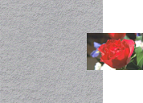 |
A' and
'V' and 'smush' them together with as little space between them
as posible.
|
![[IM Output]](smush_append.png)
|
-smush" is
designed to do, though it requires a lot of calculations, so is a lot slower
than Append (see above).
The argument, is an offset for that final position, and is usually a positive
value to generate a gap, but can be negative to create an overlap.
|
Composition of Multiple Pairs of Images
Composition is the low-level operation that is used to merge two individual images together. Almost all layering techniques eventually devolve down to merging images together two at a time, until only one image is left. So lets start by looking at ways of doing low-level composition of image pairs.Using the Composite Command
The traditional method of combining two images together using ImageMagick is though the "magick composite" command. This command can only combine
only two images at a time, saving the results of each operation into a file.
This of course does not stop you from using it to layer multiple images, one
image at a time...
| 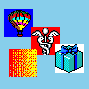 |
| As all input images are read in by ImageMagick BEFORE the output image is opened, you can output to one of the input images. This allows you to work on the same image over and over, as shown above, without problems. Do not do this with a lossy image format like "JPEG" as the format errors are accumulative, and the base image will quickly degrade. |
-geometry" setting.
magick composite" command also has a few other advantages in that
you can use to control the way the image is drawn onto the background with the
"-compose" option and
its relative position is effected by the "-gravity" setting.
You can also "-tile" the
overlay so that it will just cover the background image, without needing to
specify tile limits. This is something only available when using
"magick composite".
The big disadvantage with this method is that you are using multiple commands,
and IM has to write-out the working image, either to a pipeline, or to disk,
for the next command to read-in again.
To find more examples of using the "magick composite" command, to
overlay images on top of other images, see "Annotating by Overlaying Images" and "Image Positioning using Gravity".
Composite Operator of Convert
The "-composite"
operator is available within the "magick" command. For more
details see Image Composition in IM.
This allows you to do the same as the above, but all in one command.
|
![[IM Output]](compose.gif)
|
skyblue" in color, and then layers each of the later images onto
that canvas at the given locations.
Now the "-geometry" is
is a very special operator that not only sets an overlay position for the next
"-composite"
operation, it will also "-resize" the last image (and only the last image) in the
current image sequence.
|
![[IM Output]](compose_geometry.gif)
|
-geometry", even
if it is convenient. Basically as it is more of a backward compatibility
effect and may in some situations generate other effects.
Here is the more verbose recommendation...
|
Draw Multiple Images
Also using "magick" you can also use Draw Primitives to overlay images onto its
working canvas.
|
|
-gravity" effected, just like text.
Layering Multiple Images
True layering of images requires methods to combine multiple images together, without needing to individually compose each pair of images separately. This is where the various-layers operator methods come into their own.
Ordering of layered images can be important, so it is a good idea to
understand the special Image Sequence or List
Operators.
Note that 'layered images' is practically identical to the handling 'animated
frames'. As such it is recommended you also look at both Animation Basics and Animation Modifications for techniques involving processing individual
'layers' or 'frames'. Actually animations often use the same -layers operator for processing
images.
Flatten - onto a Background Image
The "-layers
flatten" image list operator, (or its shortcut "-flatten") will basically "Compose" each of the given images on to a background
to form one single image. However the image positions are specified using
their current Virtual Canvas, or Page offset.
For example, here I create a nice canvas, and specify each of the images
I want to overlay onto that canvas.
|
![[IM Output]](flatten_canvas.gif)
|
As of IM v6.3.6-2 the "-flatten" operator is only an alias for a "-layers 'flatten'" method.
Thus the "-flatten"
option can be regarded as a short cut for the "-layers" method of the same
name.
|
-flatten" create
one for you. The canvas color will be the current "-background" color, while its
size is defined by the first images Virtual
Canvas size.
|
![[IM Output]](flatten_page.gif)
|
While the "-gravity"
setting will effect image placement defined using "-geometry" settings, it will
not effect image positioning using virtual canvas
offsets set via the "-page" setting. This is part of the definition of such offsets.
See Geometry vs Page Offsets for more
details.
If placement with "-gravity" is need look at either the above multi-image
composition methods, or the special Layers Composition method that can handle both positioning methods
simultaneously.
|
|
![[IM Output]](flatten_bounds.gif)
|
|
![[IM Output]](flatten_shadow.png)
|
| Using Flatten for adding generated Shadow Images is not recommended, as generated shadow images can have negative image offsets. The recommended solution, as given in the section on Shadow Images, is to use the more advanced Layer Merging technique, we will look at later. |
|
Strangely the exact same handling can be used to 'clip' or Crop an image to a virtual canvas that is smaller
than the original image. In this case however you want to use a negative
offset to position the 'crop' location, as you are offsetting the image and
not positioning the crop 'window'.
|
![[IM Output]](flatten_crop.gif)
|
-flatten" also
does. It also will not 'expand' the image itself to cover the whole viewport
if the image was only partially contained in that viewing window.
A common mis-use of the "-flatten" operator is to Remove
Transparency from an image. That is, to get rid of any transparency that
an image may have, but overlaying it on the background color. However this
will not work when multiple images are involved as as such no longer
recommended.
Mosaic - Canvas Expanding
The "-layers
mosaic" operator (or its "-mosaic" shortcut) is more like
an expanding canvas version of the Flatten Operator.
Rather than only creating an initial canvas based on just the canvas size of
the initial image, the Mosaic Operator creates a canvas
that is large enough to hold all the images (in the positive direction only).
For example here I don't even set an appropriate Virtual Canvas, however the "-mosaic" operator will work out how big such a canvas needs to be
to hold all the image layers.
| 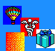 |
As on IM v6.3.6-2 the "-mosaic" operator is only an alias for a "-layers 'mosaic'".
Thus the "-mosaic"
option can be regarded as a short cut for the "-layers" method of the same
name.
|
-mosaic" and "-flatten" still creates a canvas that started from the 'origin' or
0,0 pixel. This is part of the definition of an images 'virtual canvas' or
'page' and because of this you can be sure that the final image for both
operators will have a no virtual offset, and the whole canvas will be fully
defined in terms of actual pixel data.
Also note that "-mosaic"
will only expand the canvas in the positive directions (the bottom or right
edges), as the top and left edge are fixed to the virtual origin. That of
course means "-mosaic"
will still clip images with negative offsets...
|
![[IM Output]](mosaic_clip.gif)
|
Merging - to Create a New Layer Image
The "-layers merge"
operator is almost identical to the previous operators and was added with IM
v6.3.6-2. It only creates a canvas image just large enough to hold all the
given images at their respective offsets.
Like Mosaic will also expand the canvas, but not only
in the positive direction, but also in the negative direction. Basically it
means that you don't have to worry about clipping, offset, or other aspects
when merging layer images together. All images will be merged relative to
each others location.
The output does not include or ensure the origin is part of the expanded
canvas. As such the output of a Layers Merge can
contain a 'layers offset' which may be positive or negative.
In other words.. Layers Merge merges layer images to
produce a new layer image. As such if you don't want that offset
when finished you will probably want to include a "+repage" operator before the
final save.
For example here is the same set of layer image we have used previously...
| 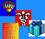 |
|
![[IM Output]](layers_merge_2.gif)
|
+repage"
operator in the above examples, removes the absolute virtual canvas offset in
the final image, preserving only the relative image placements between the
images. The offset was removed as web browsers often have trouble with image
offsets and especially negative image offsets, unless part of a GIF animation.
But if I did not remove that offset, all the images will remain in their
correct location on the virtual canvas within the generated single layer
image, allowing you to continue to process and add more images to the merged
image. Typically you would use a "-background" color of
'None', to make the unused areas of the merged image transparent.
When applied to a single image, Layer Merging will
replace any transparency in the image with the solid color background, but
preserve the images original size, as well as any any offsets in that image,
The virtual canvas size of the image however may be adjusted to 'best fit'
that images size and offset.
The operators original purpose was allow users to more easily merge multiple
distorted images into an unified whole, regardless of the individual images
offset. For example when aligning photos to form a larger 'panorama'. You
could simply start with a central undistorted base image (without an offset),
and use this operator to overlay the other images around that starting point
(using either negative or positive offsets) that have been aligned and
distorted to match that central image.
For other examples of using this operator by distorting images to align common
control points, see 3D Isometric Photo
Cube, and 3D Perspective Box.
Other examples of using this operator is to generate a simple series of Overlapping Photos.
The operation "-layers trim-bounds" can be used to ensure all
images get a positive offset on a minimal canvas size, while retaining there
relative positions, and without actually layer merging the images into one
final image.
This lets you then perform further processing of the images before they are
actually merged, such as placing more images relative to the that image group
but looking up the resulting virtual canvas bounds.
However if images have a transparency, it is probably a good idea to trim
that transparency from images first, making the ideal usage...
-alpha set -bordercolor none -border 1x1 -trim -layers trim-bounds
This minimizes the image layers including any and all transparent areas of
actual image data, while ensuring everything is contained on a valid
virtual (positive) canvas of minimal size.
Coalesce Composition - a Progressive Layering
The "-layers
coalesce" image operator (or its "-coalesce" shortcut) is really
designed for converting GIF animations into a sequence of images. For
examples, see Coalescing Animations
for details.
However, it is very closely associated with "-flatten" and has very useful
effects for multi-layered images in this regard.
For example using Coalesce on a single image, will do
exact the same job as using Flatten with a "-background" color of
'None' or 'Transparency'. That is, it will 'fill
out' the canvas of the image with transparent pixels.
| 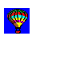 |
magick -page 100x100+5+10 balloon.gif -page +35+30 medical.gif \
-page +62+50 present.gif -page +10+55 shading.gif \
-set dispose None -coalesce miff:- |\
montage - -frame 4 -tile x1 -geometry +2+2 \
-background none -bordercolor none coalesce_none.gif
|
-set" all
the "-dispose" settings
to 'None'. This effectively
tells "-coalesce" to
just overlay each frame on top the results of the previous overlays.
The result is the first image is just a 'fill out' of the images canvas, with
a transparency background. The next image is the previous image with that
layer overlaid. And so on. A 'progressive' flatten of the image sequence.
The last image in the sequence will thus be the same as if you did a normal
"-flatten" with a
transparent background.
You can get a completely different sort of effect if you had used a "-dispose" setting of 'Background'. In this case
"-coalesce" will just
'fill out' the canvas of each image, as if they were completely separate
images!
magick -page 100x100+5+10 balloon.gif -page +35+30 medical.gif \
-page +62+50 present.gif -page +10+55 shading.gif \
-set dispose Background -coalesce miff:- |\
montage - -frame 4 -tile x1 -geometry +2+2 \
-background none -bordercolor none coalesce_bgnd.gif
|
-coalesce" operator does
not make use of the current "-compose" alpha composition setting. It only uses an 'Over' compose method, as this is what is
required for GIF animation handling.
Using different "-compose" methods with the more standard image layering operators
is the subject of the next set of examples.
Compose Methods and Layering
The three Layering methods: Flatten, Mosaic, and Merge; will make use of the "-compose" setting to determine the composition method used to
overlay each image in sequence. As such you could think of these functions as
a multi-image "-composite" operator with the ability to set an initial "-background" canvas of
a specified color.
However using anything but the default Alpha
Composition of 'Over' requires some thought before applying
or you will get unexpected results. You may also may need to think about the
effect of the "-background" color that is used by these operators to generate
a starting canvas, onto with each image (including the first) in composed.
For example lets place each successive image under the previous images
using a 'DstOver'...
|
![[IM Output]](flatten_dstover.gif)
|
|
![[IM Output]](layer_dstover.gif)
|
As you can see the image processing for the above was simpler and cleaner than you normally would see with shadow generation, just by underlaying each image in sequence (with a transparent starting canvas)
Of course I could have just as easily Reverse the image list instead.
|
Xor' compose method, you get an unusual and complex looking
symbol, for minimal effort.
|
Layers Composite - Merge Two Layer Lists
With IM v6.3.3-7 the "-layers" method, 'Composite' was added
allowing you compose two completely separate sets of images together.
To do this on the command line a special 'null:' marker image is needed to define where the first
destination list of images ends and the overlaid source image
list begins. But that is the only real complication of this method.
Basically each image from the first list is composed against the corresponding
image in the second list, effectively merging the two lists together.
The second list can be positioned globally relative to the first list, using
a Geometry Offset, just as you can with
a normal Composite Operator (see above).
Gravity is also applied using the canvas size of the first image, to do the
calculations.
On top of that 'global offset', the individual virtual offset of image is also
preserved, as each pair of images is composited together.
One special case is also handled. If one of the image lists contains only one
image, that image will be composed against all the images of the other list.
Also in that case the image meta-data (such as animation timings) of larger
list is what will be kept, even if it is not the destination side of the
composition.
This laying operator is more typically used when composing two animations, which can be regarded as a sort of time-wise layered image list. Because of this it is better exampled in the Animation Modifications section of the examples. So see Multi-Image Alpha Composition for more details.
Handling Image Layers
Laying multiple images using the various layer operators above is a very versatile technique. It lets you work on a large number of images individually, and then when finished you combine them all into a single unified whole. So far we have shown various ways of merging (composing or layering) multiple images in many different ways. Here I provide some more practical examples on just how to make use of those techniques.Layering Of Thumbnail Images
You can also use this technique for merging multiple thumbnails together in various complex ways. Here I add a Soft Edge to the images as you read and position them, you can generate a rather nice composition of images, on a Tiled Canvas.
magick -page +5+5 holocaust_tn.gif \
-page +80+50 spiral_stairs_tn.gif \
-page +40+105 chinese_chess_tn.gif \
+page \
-alpha Set -virtual-pixel transparent \
-channel A -blur 0x10 -level 50,100% +channel \
\( -size 200x200 tile:tile_fabric.gif -alpha Set \) -insert 0 \
-background None -flatten overlap_canvas.jpg
|
![[IM Output]](overlap_canvas.jpg)
Calculated Positioning of Images.
The Virtual Canvas Offset (page) can be set in many ways. More specifically you can "-set" set this per-image Attribute, and even calculate a different location for each and every
image.
For example here I read in a big set of images (small icon images all the same
size) and arrange them in a circle.
magick {balloon,castle,eye,eyeguy,ghost,hand_point,medical}.gif \
{news,noseguy,paint_brush,pencil,present,recycle}.gif \
{shading,skull,snowman,storm,terminal,tree}.gif \
\
-set page '+%[fx:80*cos((t/n)*2*pi)]+%[fx:80*sin((t/n)*2*pi)]' \
\
-background none -layers merge +repage image_circle.png
|
-set page" operation that uses the normalized image index (the FX Expression
't/n' ) to create a value from 0.0 to not quite 1.0 for each
individual image. This value is then mapped to position the image (by angle)
in a circle of 80 pixels radius, using FX
Expressions as a Percent Escape.
The position calculated is of the top-left corner of the image (not its
center, though that is a simple adjustment), which is then Merged to generate a new image. The positioning is done without regard
of the offset being positive or negative, which is the power of the Merge Laying Operator. That is, we generated a new image of
all the images as they are relative to each other.
The final "+repage"
removes the final resulting negative offset of the merged layer image, as this
is no longer needed and can cause problems when viewing the resulting image.
Note that the first image (right-most in result) is layered below every other
image. If you want the layering to be truly cyclic so the last image was
below this first one, you may have to divide that first image in half and put
the top half at the end of the sequence so the top half of the first image
layers over last image, while the lower half remains below the second image.
This technique is powerful, but it can only position images to an integer
offset. If you need more exact sub-pixel positioning of images then the
images will need to be distorted (translated) to the exact sub-pixel location
rather than simply adjusting its virtual offset.
Incrementally Calculated Positions
You can access some image attributes of other images using FX expressions, while setting the attribute of images as they are processed. This means that you can set the location of each image, relative the calculated position of the previous image. For example this sets the position of each image to be to the right of the previous image. That is, the previous image's position plus its width.
magick rose: netscape: granite: \
\
+repage -set page '+%[fx:u[t-1]page.x+u[t-1].w]+0' \
\
-background none -layers merge +repage append_diy.png
|
![[IM Output]](append_diy.png)
page' (virtual offset) attribute. The result is a DIY Append Operator equivalent, and from which you can develop
your own variations.
You should note that the whole sequence is actually shifted by
'u[-1].w' set during the position calculation of the first image.
This should be the width of the last image in the current image sequence.
That overall displacement however is junked by the final "+repage". You can use some extra
calculation to have it ignore this offset, but it isn't needed in the above.
When using an image index such as 'u[t]' all image selectors
'u', 'v', and 's', all references the
same image, according to the '[index]' given. As such it is
better to use 'u' (the first or zeroth image) as a mnemonic of
this indexing behaviour (and in case this changes).
For more information see FX, The DIY Image
Operator.
|
magick font_[0-9].gif \
-set page '+%[fx:u[t-1]page.x+u[t-1].w-8]+%[fx:u[t-1]page.y+4]' \
-background none -layers merge +repage append_offset.gif
|
Two Stage Positioning of Images
You can simplify your image processing, by separating them into two steps. One step can be used to generate, distort, position and add fluff to images, with a final step to merge them all together. For example, lets create Polaroid Thumbnails from the larger original images in Photo Store, processing each of them individually (keeping that aspect separate and simple). |
![[IM Output]](overlapped_polaroids.jpg)
-repage" operator, see Canvas Offsets), so that each image generated will
be exactly 60 pixels to the right of the previous image. That is, each image
center is spaced a fixed distance apart, regardless of the images actual size,
which could have changed due to aspect ratios and rotations.
The other major trick with this script is that rather than save each 'layer
image' into a temporary file, you can just write the image into a pipeline
using the MIFF: file format. A method known as
a MIFF Image Streaming.
This works because the "MIFF:" file format allows you to simply
concatenate multiple images together into a single data stream, while
preserving all the images meta-data, such as its virtual canvas offset.
This technique provides a good starting point for many other scripts. Images
can be generated, or modified and the final size and position can be
calculated in any way you like.
Another example is the script "hsl_named_colors" which takes the list of named colors found in
ImageMagick and sorts them into a chart of those colors in HSL colorspace.
You can see its output in Color
Specification.
Other possibilities include...- Use any type of thumbnail (or other Fluff), or just simply use a raw small thumbnail directly.
- Generate images so the first image is centered and the other images are arrange to the left and right under that first image, like a pyramid.
- Position images into Arcs, Circles and spirals, by placing them at specific X and Y coordinates relative to each other. For example: PhD Circle, Sunset Flower, Fibonacci Spiral.
- Position images according to their color. For example: Book Covers.
- Position images by time of day or time submitted. For example: Year of Sunsets
Pins in a Map
Here is a typical layering example, placing coloured pins in a map, at specific locations.+18+41.
I also have an image of a Map of Venice, and want
to put a pin at various points on the map. For example 'Accademia' is locate
at pixel position, +160+283.
To align the push-pin with that position you need to subtract the location of
the end of the pin from map position. This produces an offset of
+142+242 for our 'pin' image.
Here is the result, using layered images
magick map_venice.jpg -page +142+242 push_pin.png \
-flatten map_push_pin.jpg
|
![[IM Output]](map_push_pin.jpg)
![[Data File]](map_venice_pins.txt.gif)
|
|
magick" command to be run. The scripts in Image Warping Animations use this
technique.
Both methods avoid the need to generate temporary images.
Layers of Shadows
Correctly handling semi-transparent shadow effects in a set of overlapping images is actually a lot more difficult than it seems. Just overlaying photos with shadows will cause the shadows to be applied twice. That is, two overlapping shadows become very dark, where in reality they do not overlay together in quite the same way that the overlaying images do. The various parts of the image should be simply shadowed or not shadowed. That is, shadows should be applied once only to any part of the image. You should not get darker areas, unless you have two separate light sources, and that can make things harder still. Tomas Zathurecky < tom @ ksp.sk > took up the challenge of handling shadow effects in layered images, and developed image accumulator technique, to handle the problem. Basically we need to add each image to the bottom of stack one at a time. As we add a new image the shadow of all the previous images needs to darken the new image, before it is added to the stack. However only the shadow falling on the new image, needs to be added. Shadows not falling on the new image needs to be ignored until later, when it falls on some other image, or the background (if any). Here is an example...
| 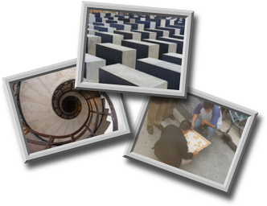 |
-size 1x1 xc:none"), if you don't want to use that
first image to initialize the stack.
Now to add a new image to the bottom of the image stack, we apply the same set
of operations, each time...
- First the thumbnail image is read into memory, and any rotations, relative placements (may be negative), is applied. You could also do apply other thumbnailing operations to the image at this point if you want, though for his example that have already been performed. The new image forms image index #1.
- We now grab the previous stack of images (#0), generate a shadow with appropriate color, blur, offset, and ambient light percentage.
- This shadow is overlaid on the new image (#1) so only the shadow that
falls '
ATop' the new image is kept. We also (optionally) apply a Trim Operation the result to remove any extra space added from the shadowing operation, to form image #2. - Now we simply add the new image (#2) to the accumulating stack of images (#0).
- and delete all the previous working images, except the last.
Now the above handles multi-layered image shadows properly, but while the shadow is offset, it is actually offset equally for all the images! What really should happen is that the shadow should become more offset and also more blurry as it falls on images deeper and deeper in the stack. That is, an image at the top should case a very blurry shadow on the background, compared to the bottom-most image. This is actually harder to do as you not only need to keep a track of the stack of images, you also need to keep a track of how 'fuzzy' the shadow has become as the stack of images becomes larger. Thus you really need two accumulators. The image stack (as above), and the shadow accumulation, as we add more images. For example here is the same set of images but with shadows that get more blurry with depth.
|
![[IM Output]](layers_of_deep_shadows.png)
|
70x0+0+0'
in this case).
The new image is then added to the accumulating stack of images (#0).
But after adding new images (#2) shadow directly to the accumulated shadow
(#1), again without blur or offset, only then do we blur and offset ALL the
shadows, to form the new accumulated shadow image.
In other words, the accumulated shadow image becomes more and more blurry and
offset as the stack gets thicker and thicker. Only the shadow of deeper images
has not accumulated the effect as much.
This program essentually separates the application of the shadow, from the
incremental shadow accumulator. This allows you control things like...
- Realistic Shadow (as above): 70x0+0+0 and 100x2+4+7
- Constant Shadow (as basic example): 70x2+4+7 and 100x0+0+0
- constant blur, but cumulative offset: 70x2+0+0 and 100x0+4+7
- both constant and progressive offset: 60x0+4+7 and 100x0+1+1
- cumulative ambient light effect: 80x0+0+0 and and 95x2+4+7
-background" color before the "-compose
ATOP" composition will let you define the color of the shadow (actually
a colored ambient light).
You can even even use a different color for the shadow that eventually falls
on the final background layer (the last "-background black"
setting), or leave it off entirely to make it look like the images are not
above any background at all (that is floating in mid-air).
It is highly versitile.
Tomas Zathurecky went on to develop another method of handling the shadows of layered images, by dealing with a list of layered images as a whole. Something I would not have considered posible myself. The advantage of this method is that you can deal with a whole list of images as a whole, rather than having to accumulate one image at a time, and repeating the same block of operations over and over. First lets again look at the simplier 'contant shadow' problem.
| 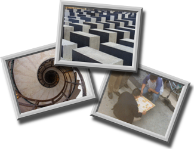 |
-layers trim-bounds", a Bounds Trimming operation that expands the
virtual canvas of all images so as to contain all the images, and also ensure
all offsets are positive.
This is then cloned, Coalesced and shadowed to create
a separate progressing list of shadows.
Now we can use Layer Compostion to merge the
shadows and the original list of images together. The complication here is
that before merging we need to not only add a special 'null:'
marker image to divide the two lists, but also add a special blank image
'xc:none' so as to offset the shadow list. that way each shadow
image will be overlaid 'ATop' the
next image of the original list.
All that is left is to merge the now correctly shadowed images from bottom to
top (Reverse) order.
To handle 'deep shadows' requires Layer Calculations.
| 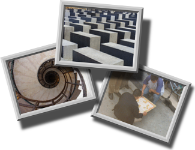 |
The above will be a lot simplier using the IMv7 "magick" command, which
would allow you to use 'fx calculations' directly the argument to
"-shadow", that would let you not only calculate a larger
offset for the shadow with depth, but also let you mak ethe shadow more
blurry with depth.
|
Positioning Distorted Perspective Images
Aligning distorted images can be tricky, and here I will look at aligning such images to match up at a very specific location. Here I have two images that highlight a specific point on each image. The second image is 65% semi-transparent, which allow you to see though it when it is composed onto the blue image, so you can see if the marked points align. The marked control points themselves are at the coordinates![[IM Output]](align_blue.png)
{kind=link}
{kind=link}
{kind=link}
{kind=link}
{kind=link}
{kind=link}
{kind=link}
{kind=link}
{kind=link}
{kind=link}
{kind=link}
{kind=link}
{kind=link}
{kind=link}
{kind=link}
{kind=link}
{kind=link}
{kind=link}
{kind=link}
{kind=link}
{kind=link}
{kind=link}
{kind=link}
{kind=link}
{kind=link}
{kind=link}
59,26 (blue) and 35,14 (red) respectively.
If you are simply overlaying the two images, you can just subtract the offsets
and 'compose' the two image on top of each other, producing an offset of
+24+12.
|
![[IM Output]](align_composite.png)
|
When distorting the image, you will want to ensure the two pixels remain aligned. The best way to do that would be to use the points you want to align as Distort Control Points. This will ensure they are positioned properly.
| 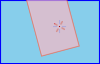 |
{kind=link}
|
![[IM Output]](align_rotate_merge.png)
|
+repage" before saving the final image. If I was
going to do further processing (without displaying the result on the web)
I would keep that offset (remove the "+repage"), so the image
positions remains in their correct and known position for later processing.
Now the same techniques as shown above would also apply if you were doing a more complex distortion such as Perspective.
| 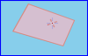 |
{kind=link}
|
![[IM Output]](align_persp_shape.png)
|
|
| 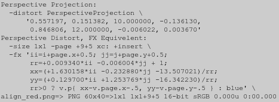 |
null:" image file format. We also tell the distort that the
new image it is generating is only one pixel is size using a Distort Viewport. That way it does the
distortion preparation and verbose reporting, but then only distorts a
single 'destination' pixel, which is then junked. This can save a lot of
processing time.
Actually if the distortion did not use source image meta-data (needed for the
percent escapes '%w' and '%h') as part of its
calculations, we would not even need the source image
"align_red.png". In that case we could have used a single pixel
"null:" image, for the input image too.
We are also not really interested in the virtual pixels, backgrounds, or
anything else for this information gathering step, so we don't need to worry
about setting those features.
Now we can get the distort information, we need to extract the 8 perspective coefficients, from the 3rd and 4th line of the output. These can then be used to map the red control point to its new distorted position, and from there subtract it from the blue control point, so as to get the actual amount of translation that is needed, to align the marked red coordinate with the blue coordinate.
|
![[IM Text]](align_persp_coord.txt.gif)
|
tr" text filter to remove extra quotes and
commas from the output. It then uses the "awk" program to
extract the coefficients, and do the floating point mathematics required to
'forward map' the red marker to match the blue marker.
Note that I again added 0.5 to the 'pixel coordinates' of the control points
to ensure that the center of the pixel is what is used for the calculations.
See Image Coordinates vs Pixel
Coordinates.
Now we know the amount of translation needed by the distorted image, we have
two ways you add that translation to the distortion. Either by modifying the
coefficients of the perspective projection appropriately (not easy). Or we
could just add the translation amounts to each of the destination coordinates
of the original (very easy).
Here is the result of the latter (add translations to destination
coordinates)...
| 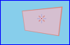 |
{kind=link}
To the right I have cropped and scaled the result around the control points
to show they are perfectly aligned!
| 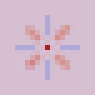 |
{kind=link}
A similar but simpler problem is looked at in Text Positioning using Distort.
Evaluate-Sequence - Direct Mutli-Image Merging Methods
The "-evaluate-sequence" methods, are designed to merge multiple
images of the same size together in very specific ways.
In some ways it is a blend of the Evaluate
and Function Operators combined with multi-image Composition techniques we have seen above. Many of the methods provided
can even be performed using normal multi-image layering composition
techniques, but not all.
The operator uses the same methods as "-evaluate" so you can get
a list of them using "-list Evaluate". Though some of these
(such as 'Mean' and 'Medium') are really only useful
when used with this operator.
Mean (Average) of multiple images
Essentially both the older "-evaluate-sequence mean" and the newer "-evaluate-sequence
mean" will create an average of all the images provided.
For example, here is an average of the rose image using all its Flipped and Flopped versions.
| 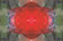 |
{kind=link}
composite
-blend 50%" image operation, which will work with two different sized
images. See the example of Blend Two Images
Together for more detail.
The IM Discussion Forum had a discussion
on Averaging a sequence 10 frames at
a time, so as to average thousands of images, without filling up the
computers memory (making it very slow). Related to this, and containing
relevent maths is the discussion Don't load all images at once.
Another alternative to using 'mean' is to use the newer Poly Operator, which can individually weight each image.
Max/Min Value of multiple images
The 'Max' and 'Min' methods
will get the maximum (lighter) values and minimum (darker) values from
a sequence of images.
Again they are basically equivalent to using a Lighten and Darken Composition Methods, but with multiple images. With
the right selection of background canvas color, you could use Flatten Operator with the equivelent compose method.
|
![[IM Output]](max.png)
|
|
![[IM Output]](min.png)
|
Median Pixel by Intensity
The "-evaluate-sequence Median" will look for the pixel which has
an intensity of the middle pixel from all the images that are given.
That is, for each position it collects and sorts the pixel intensity from each
of the images. Then it will pick the pixel that falls in the middle of the
sequence.
It can also be used as an alternative to simply averaging the pixels of
a collection of images.
This could be used for example by combining an image with two upper and lower
'limiting' images. As the pixel will be the middle intensity you will either
get the pixel from the original image, or a pixel from the 'limiting' images.
In other words you can use this to 'clip' the intensity of the original image.
Strange but true.
For an even number of images, the pixel on the brighter side of the middle
will be selected. As such with only two images, this operator will be
equivalent to a pixel-wise "lighten by intensity".
The key point is that each pixel will come completely from one image, and
sorted by intensity. The exact color of each pixel will come completely from
one of the given images, as such no new colors are generated.
For example, here is pixels of median intensity of the rose image using all
its Flipped and Flopped versions. Note how it
isn't as smooth, but could get sharp boundaries, as it is basied on
intensities of the pixels.
|
![[IM Output]](median.png)
|
Add Multiple Images
The 'Add' method is will of course simply add all the
images together.
magick ... -evaluate-sequence add ... |
magick ... -background black -compose plus -layers flatten ... |
Subtract Multiple Images
The 'Subtract' method subtracts each image from the first.
Or at least that is what it should do. Internally it has arguments swapped
and it is subtracting the previous results from the next image. Arrggggg!
However by using a quirk of the Linear Burn
Compose Method you can subtract the second and later images from the
first. Basically by Negating all but the
first image, and setting a 'white' (negated zero) as a
the starting background color you can then use Flatten to subtract all the images from the first.
magick ... \
-negate \( -clone 0 -negate \) -swap 0 +delete \
-compose LinearBurn -background white -flatten \
...
|
Multiple/Divide Multiple Images
'Multiply' and 'Divide' are accepted as methods by "-evaluate-sequence"
but they generate unexpected and odd results, as they are using the actual
color value of the images rather than the normalised color value, just as
"-evaluate" does. As
a result the scale of the multiply and divide is too large.
This could be classed as a bug.
In the meantime, you are better using the equivelent 'flatten' method for
Multiply, which does work as expected.
magick ... -background white -compose multiply -layers flatten ... |
Poly - Merge Multiple Images Using a Polynomial
Closely related to "-evaluate-sequence" and specifically to the 'mean' method (image averaging), is the
"-poly" operator (added IM
v6.8.0-5).
This operator is given a list of two numbers for each image in memory, one to
provide a multiplicative weight for each image, but also a power-of exponent
to each image. This lets you merge a list of images as if each image was the
variable input to a polynomial equation. The color values from each image is
treated as if they were a normalized 0 to 1 value.
With each pair of values the image color (normalized) is first powered by the
second 'power-of' exponent, then it is weighted (multiplied) by the first
number.
If the exponent is '1' then the value is just multiplied by the
given weighting. However if the exponent is '0' the weight
becomes the final value, producing a normalized color constant addition (value
from 0.0 to 1.0).
A single pixel image can be provided in the current image sequence, and can be
used to add a specific color, with a different normalized color value for each
channel. (using a weight and exponent = 1.0). Or you can provide
a "NULL:' image (or any other junk image), and use an exponent of
0.0. This will will only add the given weighting factor as constant.
The final image is generated from the first image (and its size and other
meta-data), just as it is with FX DIY
Operator.
For example...
|
|
rose:' (unmodified using a weight of 1 and power-of
1), adds to this twice the color values from the 'granite:'
image (weight=2), and finally subtracts a value of 1 using
a 'null:' image, using an exponent of 0 (ignore image input) and
a weighting value of -1.0.
The resulting image is equivalent to...
rose + 2.0*granite - 1.0 rose + 2.0*(granite-0.5) Hard_Light' composition lighting
effect but with very explicit weighting of the granite overlay.
The key difference to this over other multi-image operations is the ability to
weight each image individually, but perform all calculations in a single image
processing operation without the need for extra intermediate images. This
avoids any quantum rounding, clipping or other effects on the final results,
in a non-HDRI version of ImagMagick. (See Quantum Effects).
It can for example be used to perform a weighted average of large numbers of
images, such as averaging smaller groups of images, then averaging those groups
together.